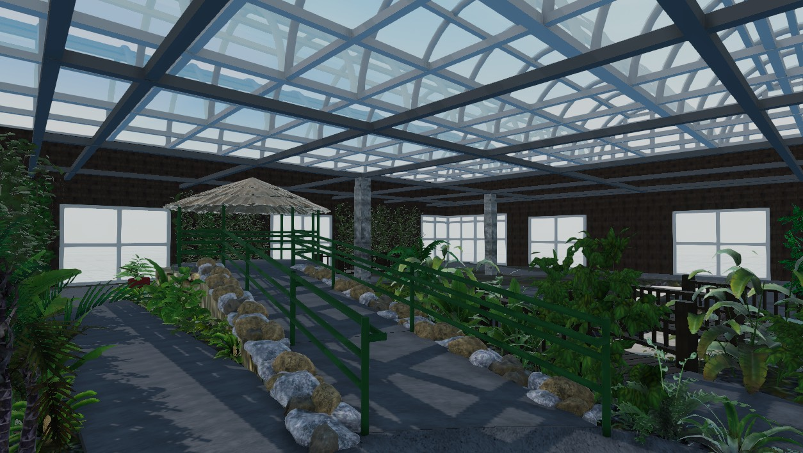
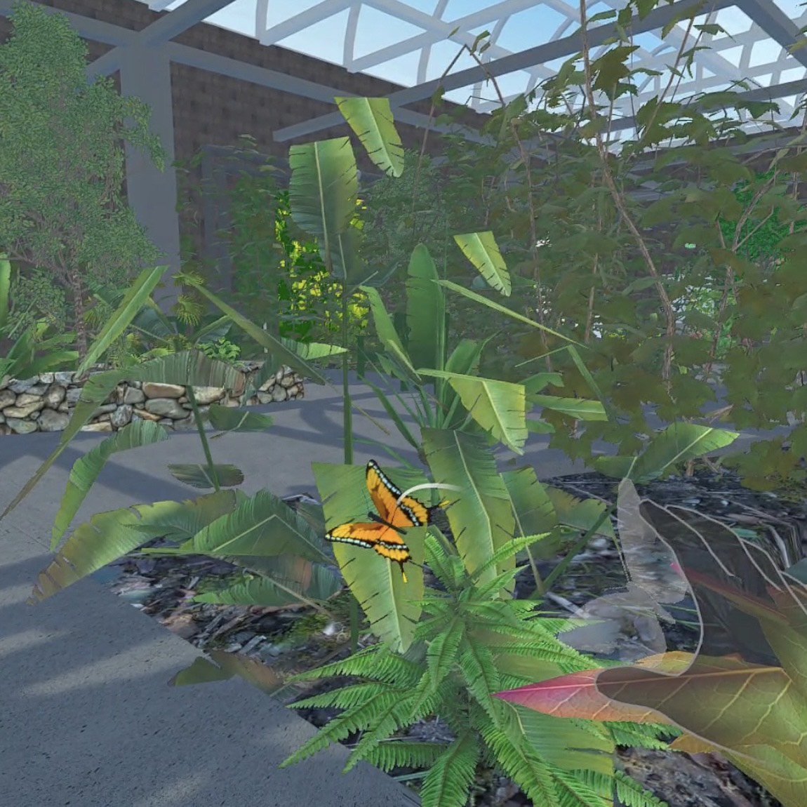
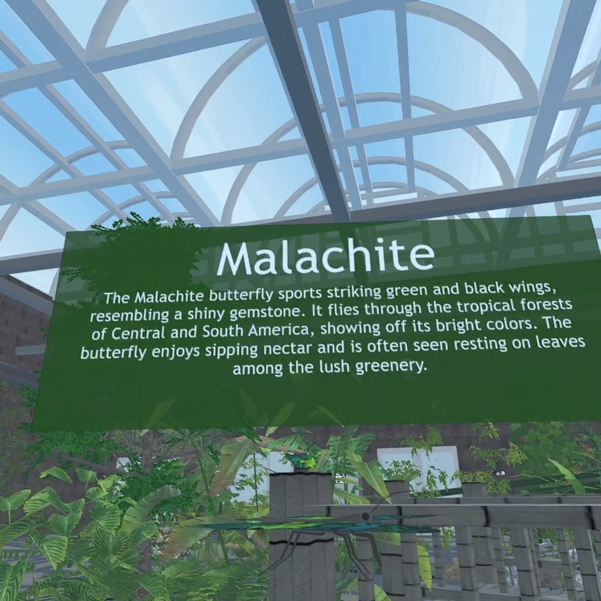
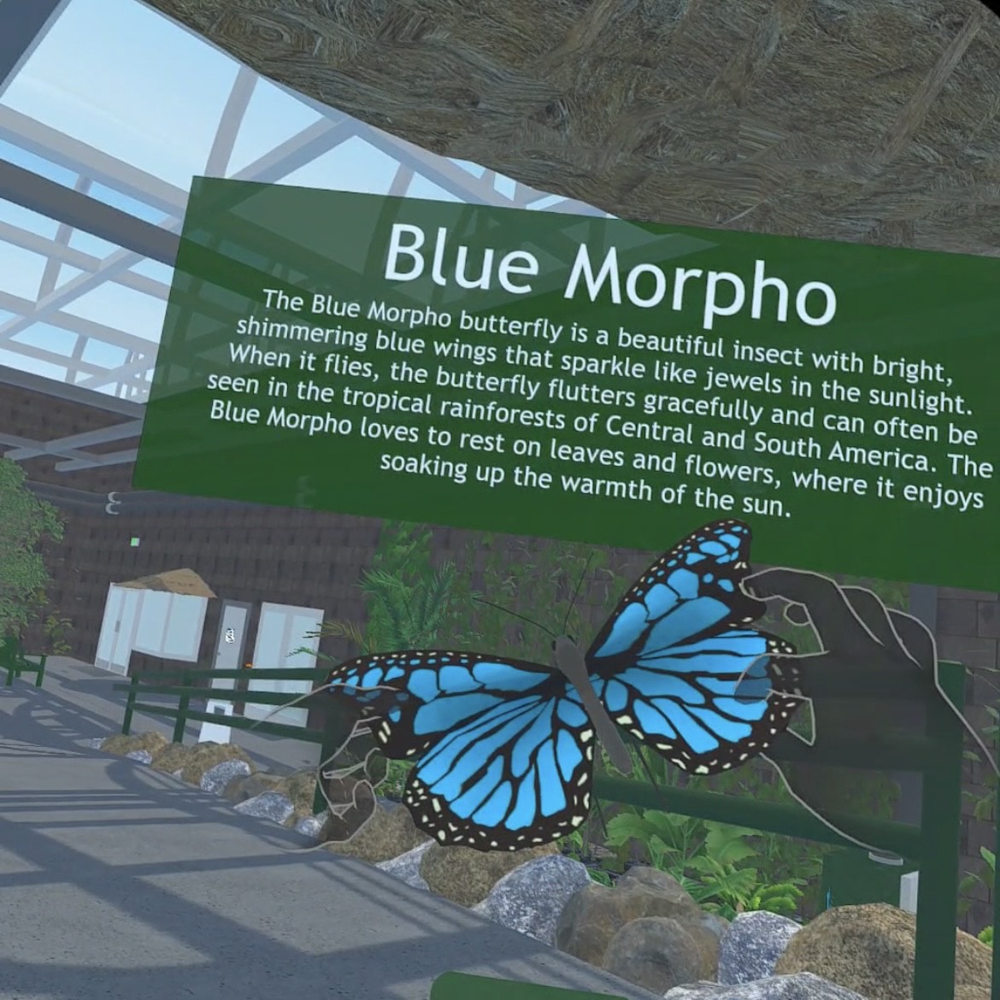
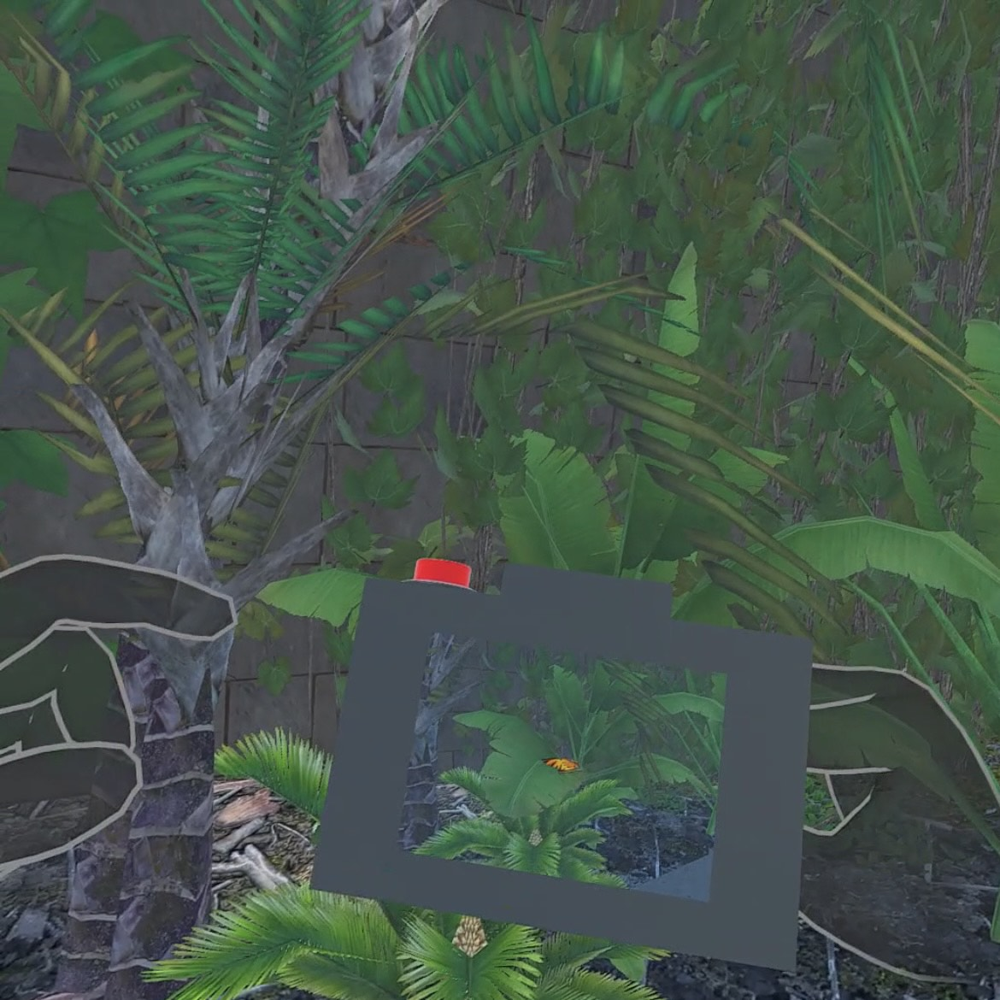
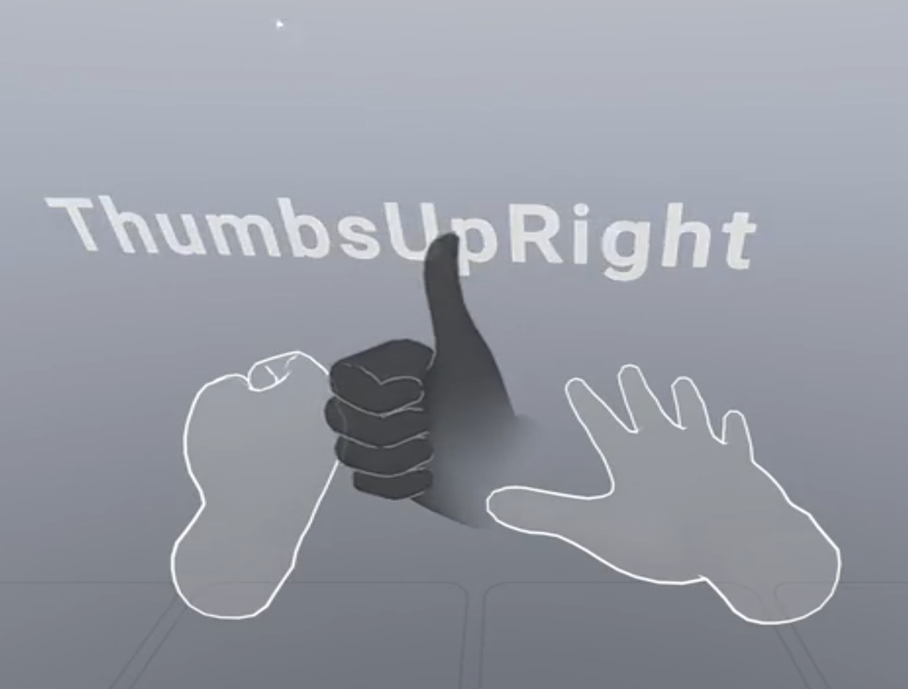
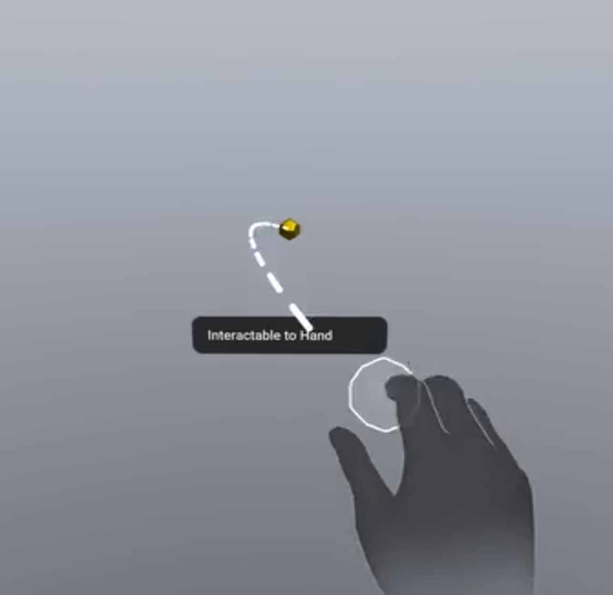
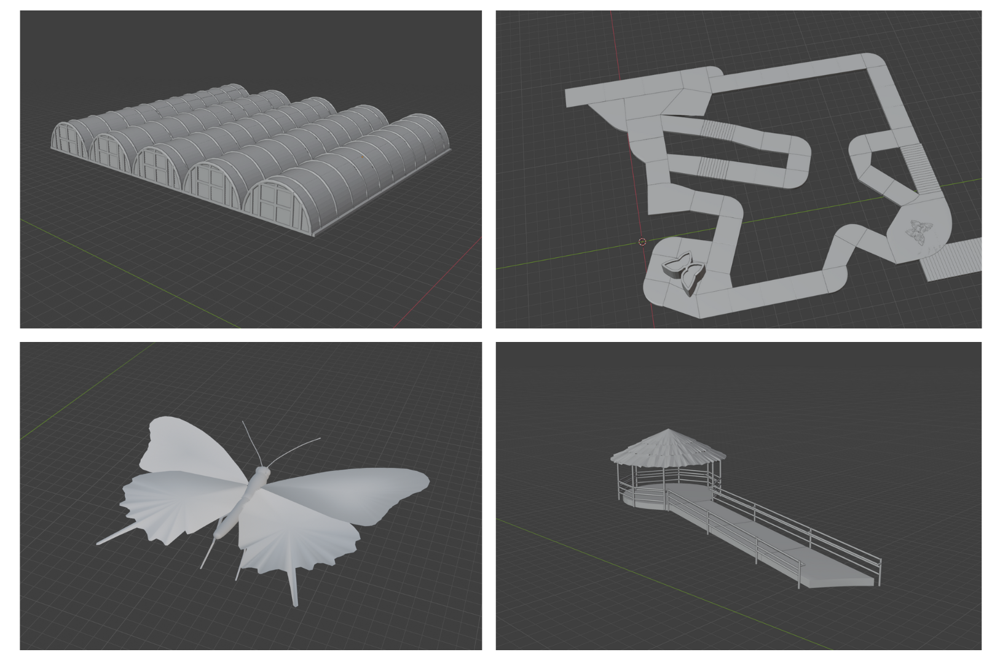
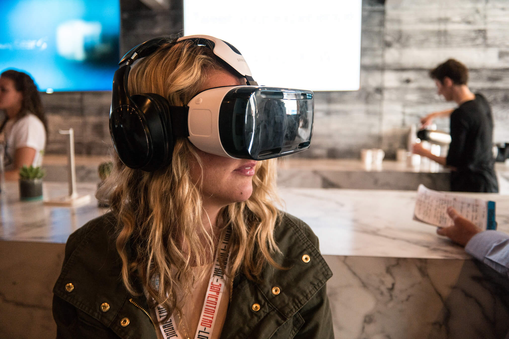
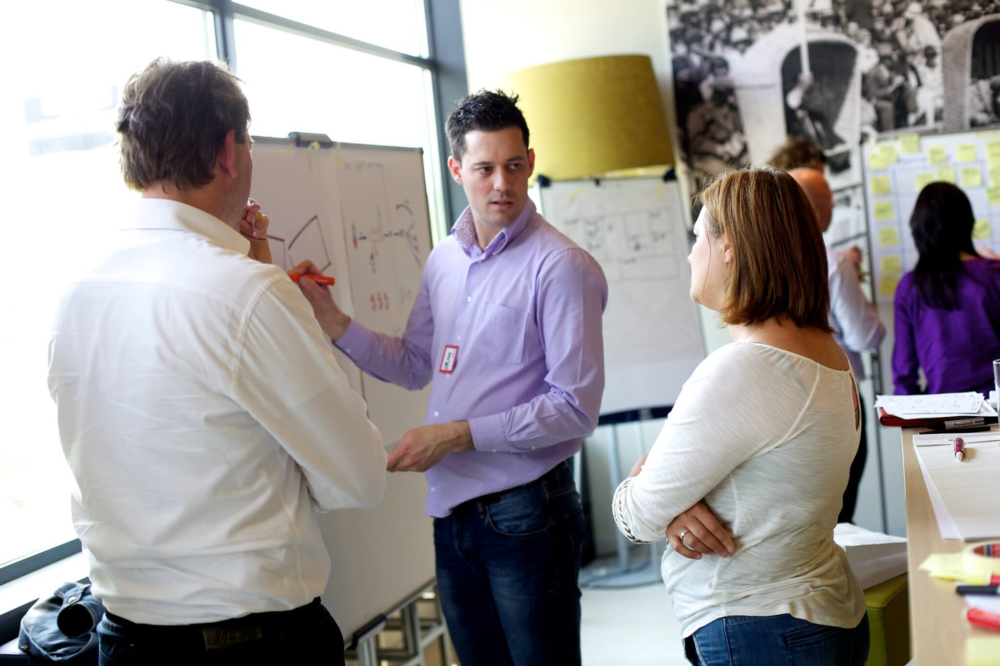

TL;DR Summary
I designed and built a fully interactive VR safari experience using Unity and C# on the Meta Quest platform. The app lets users explore virtual wildlife habitats, interact with 3D animals, and learn through immersive mechanics like scaling, inspecting, and selecting virtual creatures.
The Challenge
Wildlife Protection Solutions wanted to innovate in how they educate and engage the public with endangered species. Their small VR team lacked the bandwidth to explore new ideas. I noticed this gap and, on my own initiative, started prototyping an interactive VR experience that pushed the limits of what the team thought was possible.
My Role
- Virtual Reality Experience Manager at Wildlife Protection Services
- Sole designer and developer of this application
- Responsible for ideation, development, interaction design, testing, and internal presentation
Tools & Technologies
- Unity (primary development platform)
- C# (scripting language)
- Blender (3D modeling for high-poly butterfly models)
- Meta XR SDK (hand interaction toolkits)
- Oculus Quest 3 (target hardware)
- Visual Studio (code editing)
- Used open-source + purchased assets and customized them heavily
Key Features

Real-time 3D Environment
Users can walk through butterfly exhibits in a fully interactive VR habitat

Interactive Wildlife
Pinch to “select” butterflies and bring them close

Educational Overlays
Learn about anatomy by selecting body parts

Natural Interaction
Scale, rotate, inspect butterflies with hands

Virtual Camera
Users can simulate taking pictures and view them
My Process
1Test Hand Tracking
Started by testing Meta hand tracking and Unity scene interactions.

2Build Baseline Interactions
Used XR Interaction Toolkit for baseline interactions.

3Prototype Selection Logic
Prototyped selection logic using raycasting and pinch detection.

4Model 3D Objects and Environment
Modeled 3D objects and environmental structures, ensuring that the models were computationally efficient.

5Test Iteratively
Applied iterative testing with friends, family, and the WPS team.

6Incorporate Feedback
Incorporated feedback for usability and user onboarding.
Impact
- Team began adopting parts of my prototype into real WPS development
- Sparked new ideas and creative direction within the company
- Helped build organizational confidence in what's possible with VR
- Contributed to my credibility and future role potential at WPS
What I Learned
I learned the importance of feedback and early sharing. If I’d involved others sooner, I could have iterated faster. I also learned how valuable creative autonomy is—I now know I can take an idea from vision to prototype and inspire change, even without being asked.